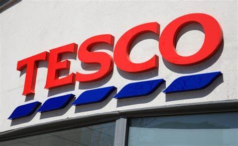
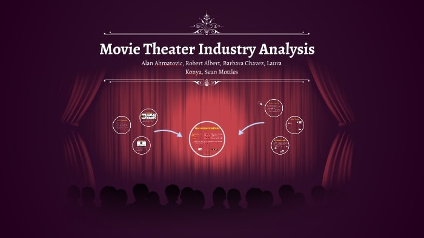
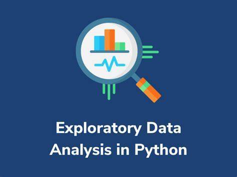

youtube data
scrapping and analysis
In this project, some of the youtube channel data was scrapped with the
help youtube reference guide, googleApiClient and further the data was
manipulated in the proper format through pandas where it can be analyzed and visualized by utilizing Seaborn library.

The aim of the project was to analyze customer data and to draw some meaningful insights. Furthermore, the prediction was carried out so as to have an idea of the customer chur beforehand. Finally, on the basis of the outputs retention programs can be developed so as to reduce the number of customer churn.
In this project, the data was scrapped using an essential library (beautiful soup) as well as with the help of html tags present in the page source further the data was converted to Xlsx format from where it can be imported to python for visualization.
Movie industry data analysis(correlation)

The purpose of this project was to fetch a raw movie industry data, cleaning the data, making suitable formating to make it more readable and easy to understand and finally to know which variable is highly correlated with the gross variable. All the above process was done using pandas, numpy, matplotlib and Seaborn.
Exploratory Data Analysis

Exploratory Data Analysis was carried out on a coaster dataset which was grabbed from Kaggle. EDA was done in 5 steps which involved Data understanding, Data preparation, feature understanding (Univariate Analysis), Feature relationship, And finally asking a question about the data in this case, it was to know what were the locations with the fastest roller coasters.
S&P 500 index price predictions using historical data
In this project, intially the S&P 500 prices history was downloaded using a package called yfinance. Further, the clean up of the data was done using pandas, in order to make it ready for machine learning. Furthermore, a machine learning algorithm that is random forest model was implemented and predictions were made with the help of backtesting. The model was improved by attaching additional predictors so as to provide rolling average rather than the absolute figure with which more accurate predictions were made. Ultimately, giving an accuracy of 58.3%. The model can be improved even further if needed by making adjustments in parameters like n_estimators, min_samples_split or completely opting for a different model.
Sentiment Analysis on Amazon Fine Food Reviews
In this project, intially the S&P 500 prices history was downloaded using a package called yfinance. Further, the clean up of the data was done using pandas, in order to make it ready for machine learning. Furthermore, a machine learning algorithm that is random forest model was implemented and predictions were made with the help of backtesting. The model was improved by attaching additional predictors so as to provide rolling average rather than the absolute figure with which more accurate predictions were made. Ultimately, giving an accuracy of 58.3%. The model can be improved even further if needed by making adjustments in parameters like n_estimators, min_samples_split or completely opting for a different model.